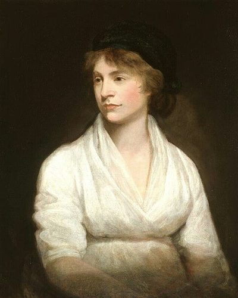

Ideologies / Liberal
What is Liberal Feminism?
Liberal Feminism is a political ideology in the Liberal family. Wollstonecraft argues that women appear weaker in mind only because they are denied education and trained to please. Since reason is given by God to both sexes alike, virtue must rest on the same principles for both. She calls for national day schools where girls and boys are taught together, for women to be able to earn their own living in trades and professions, and for them to have a civil existence and a share in government.
Reason has no sex, so rights and education should have none either.
Defined from: Mary Wollstonecraft, A Vindication of the Rights of Woman (1792)
See how close you are to Liberal Feminism Dare a friend to answer as one


Where Liberal Feminism stands on 13 axes
Each axis runs from 0 to 100. A score of 50 is the middle. On a classic compass it sits in the Libertarian Right quadrant.
| Axis | Position | Score | In words |
|---|---|---|---|
| EconomyMarket to Planned | 30 | Strongly Market | |
| OwnershipPrivate to Collective | 25 | Strongly Private | |
| RightsLiberty to Security | 15 | Very strongly Liberty | |
| GovernmentDemocracy to Autocracy | 10 | Very strongly Democracy | |
| StructureDecentralised to Centralised | 45 | Balanced | |
| NationInternationalist to Nationalist | 35 | Leans Internationalist | |
| ImmigrationMulticulturalist to Assimilationist | 40 | Leans Multiculturalist | |
| ValuesProgressive to Traditional | 15 | Very strongly Progressive | |
| TechnologyAccelerationist to Precautionary | 35 | Leans Accelerationist | |
| EnvironmentIndustrialist to Environmentalist | 35 | Leans Industrialist | |
| ReligionSecular to Religious | 40 | Leans Secular | |
| MilitaryPacifist to Militarist | 25 | Strongly Pacifist | |
| TradeFree Trade to Protectionist | 35 | Leans Free Trade |
Ideologies closest to Liberal Feminism
- Keynesian Liberalism86% alike
- Radicalism86% alike
- New Liberalism85% alike
- Georgism84% alike
- Classical Liberalism84% alike
Its opposite on this map is Juche, at 24%.
Parties near Liberal Feminism
- Free Soil PartyUnited States. Free Soil Party Platform (1848)90% alike
- Constitutional Democratic PartyRussia. Programme of the Constitutional Democratic Party (1905)89% alike
- Social Democratic Party of 1959Germany. The Godesberg Programme (1959)87% alike
- ChartistsUnited Kingdom. The People's Charter (1838)86% alike
Common questions
What is Liberal Feminism?
Liberal Feminism is a political ideology in the Liberal family. Wollstonecraft argues that women appear weaker in mind only because they are denied education and trained to please. Since reason is given by God to both sexes alike, virtue must rest on the same principles for both. She calls for national day schools where girls and boys are taught together, for women to be able to earn their own living in trades and professions, and for them to have a civil existence and a share in government.
What does Liberal Feminism believe?
In one line: Reason has no sex, so rights and education should have none either. Its strongest positions are Democracy, Liberty, Progressive. Wollstonecraft argues that women appear weaker in mind only because they are denied education and trained to please. Since reason is given by God to both sexes alike, virtue must rest on the same principles for both. She calls for national day schools where girls and boys are taught together, for women to be able to earn their own living in trades and professions, and for them to have a civil existence and a share in government.
Who founded Liberal Feminism?
Liberal Feminism is defined here from A Vindication of the Rights of Woman (1792) by Mary Wollstonecraft. The thinker most tied to it is Mary Wollstonecraft (1759 to 1797).
Is Liberal Feminism left wing or right wing?
On a classic two axis compass Liberal Feminism falls in the Libertarian Right quadrant, which means the economic right and the libertarian side. Left and right hide a lot, though, which is why EthosScales scores it on thirteen separate axes.
How is Liberal Feminism different from Keynesian Liberalism?
They are close: 86% alike. The biggest gaps are on Religion, where Liberal Feminism scores 40 and Keynesian Liberalism scores 15, and Economy, where Liberal Feminism scores 30 and Keynesian Liberalism scores 50. On each axis, 0 is one end and 100 is the other.
Think this is wrong? Suggest a correction. The scores are editorial estimates.